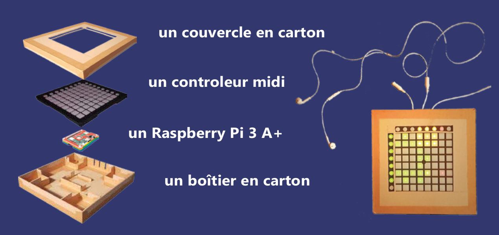

memaudio
Jeu de memory pour l'ouïe
Développement web et création de contenu : Bamdad Sabbagh
Communication et création de contenu : Thomas Fraissenon
Idée originale et développement du prototype physique : Emmanuel Roux
Une attention bénéfique. Un silence vivant.
Le memaudio est un jeu qui tente de combler un besoin de silence et de calme. Tout en étant ludique, il évite l'écueil de combler ce besoin via l'inaction ou l'isolement social car c'est un jeu pédagogique qui sollicite une attention envers soi-même et potentiellement envers les autres (en mode multijoueurs).
L'application est gratuite et l'accès aux albums est gratuit. Des dons seront acceptés afin de soutenir le développement et la création des contenus.
Contrairement à beaucoup de jeux en ligne (ou sur mobile), le temps que l'utilisateur passe à jouer au memaudio est un temps dédié à son propre intérêt (et potentiellement à celui des personnes avec qui il/elle joue). En effet, nous ne mettons en place aucune stratégie de maintient de l'attention (pas de tchat pour capter l'attention, pas de guidage d'attention, pas de publicité ... ).
Un prototype concret
Le memaudio a été initialement codé en Python (interface MIDI) avec une implentation sur une Raspberry Pi 3 A+. Le prototype physique est complémentaire de l'application web car il permet de mettre en place le jeu sans écran.
Si vous êtes intéressés par un prototype n'hésitez pas à nous contacter: contact@asso-motifs.fr
